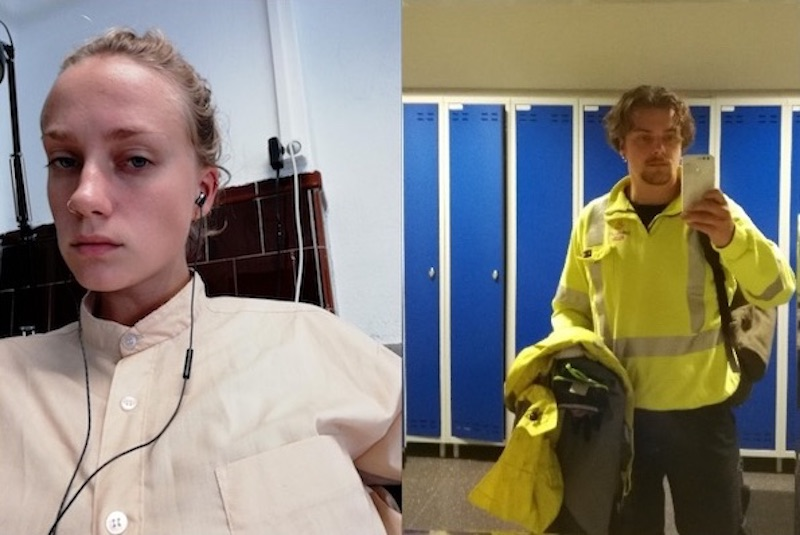
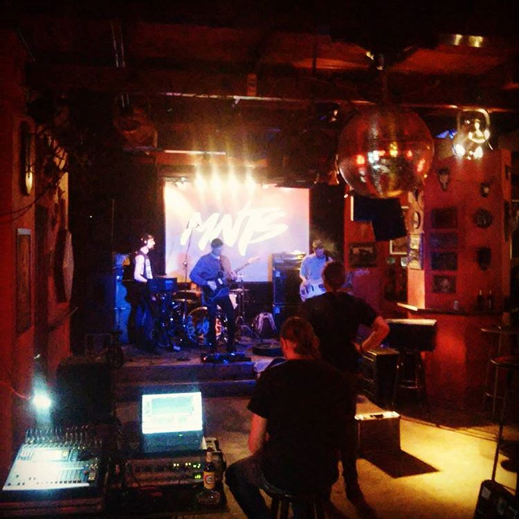

Ingrid Kristensen Bjørnaali [NO]
-> for The Samuel Jackson Five
Ingrid Kristensen Bjørnaali (1991) from Kristiansand, works and lives in Oslo. She mainly works with video art and wood cut, and recently finished her bachelor in medium- and material based art at the Oslo National Academy of the Arts. Since “Sørlandsutstillingen” in 2013, she has held two solo exhibitions, and contributed in several group exhibitions, at Galleri Kurant in Tromsø, online international art biennale, Galleri Norske Grafikere and Galleri Golsa in Oslo, among others. Her works revolve around repetition, and how to articulate different perceptions of time through various mediums and materials.

Waverant [UK]
-> for TRNA
Waverant is the ongoing visual arts project of UK based artist Alex Dickson. Having worked closely with various bands and musicians across Europe and beyond; Alex delivers striking visual work that often depicts natural scenes that are twisted and contorted many times over; almost to the point at which they become indistinguishable from their original form. He achieves this through a combination of repetition and duplication and also via an amalgamation of analogue and digital signal processing that allows for new visual forms to take hold. His previous work includes collaborations with bands such as Kokomo, Watered and Sleepmakeswaves and electronic artists Gagarin, Nolan Dialta and Daniel Adam. He is also one half of Brighton based ambient/drone/noise outfit, Benen.

Alexey Choy [RU]
-> for Mooncake
<<I work with a lot of musicians, theatres and other artists, but music is my favourite. I work with Mooncake Orchestra, Inna Zhelannaya, Huun Huur Tu, Tigran Hamasyan, Trey Gunn, The Bravo Band, BlackSkyWhite Theatre, Pyotr Mamonov, Kimmo Pohjonen, Vladimir Martynov, Ole Jørn Myklebust, Markus Reuter, Dmitry Illarionov, DakhaBrakha Band and many maaaaaany others>>
Julie Anett Spangebu [NO]
-> for SPOIWO
In the past years, Julie has been working on different video qualities, archive footage and footage from newsreels as a combination of visual elements; breaking them apart as a fusion of pixels and colors. Julie has studied both analog and digital photography at Oslo Fotokunstskole and at Nordland Kunst- og filmfagskole. Now she studies at the Tromsø Academy of Contemporary Art.
Fredrik Johansen [NO]
-> for SPOIWO
Fredrik Johansen is currently studying moving images at Nordland Kunst- og Filmfagskole in Lofoten, Norway. He has studied philosophy and has a bachelor in filmtheory. For the moment he is working with and on situations. Inspired by the everyday antihero failing to take action and responsibility. He works with satire and tries to deal with being from the countryside in some way.
Spino [KR]
-> for Raw By Peppers
<<My name is Spino. I am a visual artist currently based in Seoul. I have collaborated with a number of musicians including Raw By Peppers. You can see my works and news through the weblinks here>>
SuperviewTV [BE]
-> for Mantis
SuperviewTV is a Belgian VJ duo focusing mainly on interactive video and live visual integration. They specialise in old school video manipulation through glitching, feedback and other fx. In bigger projects, live camera feeds are merged with clips and often modulated by audio, creating direct communication between the artist and the audiance. Since 2015, SuperviewTV have been challenging themselves by providing visuals for live bands such as Mantis, where they try to translate the song structures into a video reproductive setting.